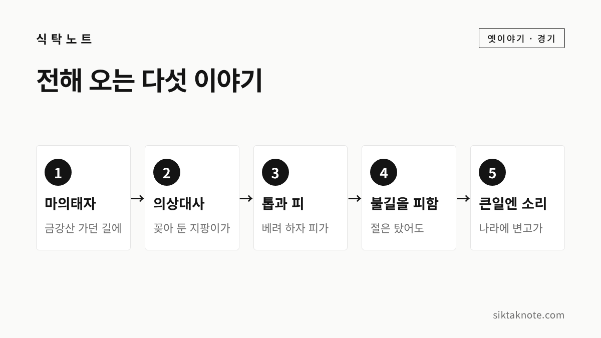
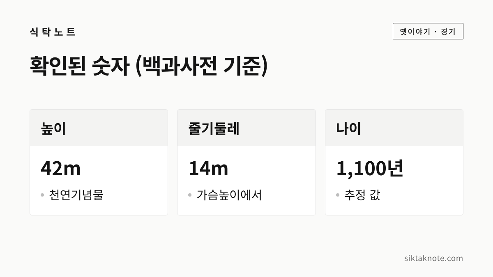

용문사 은행나무 전설 — 마의태자가 심었을까, 의상대사의 지팡이였을까

3줄 요약
- 양평 용문사 은행나무는 1962년 천연기념물로 지정되었고, 높이 42m에 나이는 1,100년으로 추정됩니다.
- 마의태자가 금강산 가던 길에 심었다는 이야기와 의상대사의 지팡이가 자란 것이라는 이야기가 함께 전해 와요.
- 톱에 피가 났다는 이야기, 나라에 큰일이 생기면 소리를 냈다는 이야기도 있는데, 확인된 수치와는 나누어 읽어 보세요.
행사 정보
- 위치
- 경기도 양평군 용문면 용문산로 782 (용문사 대웅전 앞)
- 지정
- 천연기념물, 1962년 12월 7일 지정 (제30호로 알려져 있어요)
- 규모
- 높이 42m, 가슴높이 줄기둘레 14m, 나이 1,100년 추정 (한국민족문화대백과사전)
- 개방
- 상시 개방, 연중무휴 (관광 안내 자료 기준)
- 요금
- 입장 무료, 주차장은 유료 (안내 자료 기준 소형차 3,000원)
- 문의
- 용문사 031-773-3797, 용문산 관광단지 안내사무소 031-773-0088
2026.10.15 확인 기준. 요금과 주차 정보는 예전 안내 자료 기준이라 바뀌었을 수 있어요. 올해 단풍 시기와 행사는 가시기 전에 용문사나 양평군 안내를 확인해 주세요.
절 마당에서 천 년을 넘게 서 있는 나무
양평 용문산 자락의 용문사에 가면 대웅전 앞에 하늘을 찌를 듯한 은행나무 한 그루가 서 있는데요. 천연기념물로 지정된 용문사 은행나무입니다. 동양에서 가장 큰 은행나무로 알려져 있고, 그만큼 전해 오는 이야기도 많아요.
오늘은 이 나무에 얽힌 옛이야기를 들려 드리려고 합니다. 문화재 자료로 확인되는 수치는 따로 구분해서 적을 테니, 어디까지가 기록이고 어디부터가 전설인지 나란히 놓고 읽어 보세요.


먼저 확인된 사실부터
한국민족문화대백과사전에 따르면 용문사 은행나무는 1962년 12월 7일에 천연기념물로 지정되었습니다. 흔히 천연기념물 제30호로 불러요. 높이는 42m, 가슴높이에서 잰 줄기둘레는 14m이고, 나이는 1,100년으로 추정된다고 해요.

그런데 이 숫자는 자료마다 조금씩 달라요. 한국관광공사 계열 안내 자료에는 뿌리 부분 둘레를 15.2m로 적었고, 높이를 40m쯤으로 소개하는 방송 보도도 있습니다. 어디를 재느냐에 따라 달라지는 것 같아서, 이 글에서는 백과사전 수치를 기준으로 삼았어요.
나이는 특히 '추정'이라는 점을 기억해 두시면 좋겠습니다. 나이테를 세어 확정한 값이 아니라는 뜻이에요. 일부 자료에는 절의 창건 연대를 바탕으로 짐작했다고 적혀 있어요.

마의태자가 심었다는 이야기
가장 널리 알려진 이야기는 마의태자입니다. 신라의 마지막 임금 경순왕의 아들 마의태자가, 나라를 잃은 설움을 안고 금강산으로 가다가 이 나무를 심었다고 전해 와요. 마의(麻衣)는 삼베옷을 뜻하는데요, 그 이름만 들어도 쓸쓸한 마음이 전해지는 듯하죠.
신라가 고려에 넘어간 때가 935년이니, 나이를 1,100년쯤으로 보는 추정과 얼추 맞아떨어진다는 점은 흥미롭습니다. 다만 경기일보는 마의태자에 얽힌 이야기 대부분이 소설에서 비롯되었다고 짚었어요. 사실로 믿기보다는, 망국의 왕자를 안타까워한 사람들의 마음이 이 나무에 얹힌 이야기로 읽는 편이 좋겠습니다.

의상대사의 지팡이였다는 이야기
또 하나는 신라의 고승 의상대사 이야기입니다. 대사가 짚고 다니던 지팡이를 땅에 꽂아 두고 갔는데, 그것이 뿌리를 내려 자랐다고 해요. 백과사전에는 마의태자 설과 의상대사 설이 나란히 실려 있습니다.
그런데 의상대사는 625년부터 702년까지 살았다고 알려진 7세기 분이에요. 나이를 1,100년으로 본다면 시기가 맞지 않아요. 농민신문은 두 설화를 바탕으로 계산하면 1,100년에서 1,400여 년까지도 볼 수 있다고 소개했는데요. 정확한 나이를 모르기에 이야기도 두 갈래로 남은 것 같습니다.
용문사의 창건도 이야기가 갈립니다. 913년 대경대사가 세웠다는 설과 649년 원효대사가 세웠다는 설이 함께 전해 와요.

톱을 대자 피가 났고, 불길도 비껴갔다
백과사전에는 이런 이야기도 있습니다. 옛날에 이 나무를 베려고 톱을 대자 톱자리에서 피가 흐르고, 맑던 하늘이 흐려지며 천둥이 쳐서 일을 멈췄다고 전해 와요. 조선 세종 때는 나무에 당상직첩 벼슬이 내려졌다고도 하는데요. 관광 안내 자료에는 정3품 당상관 품계를 받았다고 소개되어 있습니다.
불과 얽힌 이야기도 있습니다. 1907년 정미의병 때 일본군이 용문사에 불을 질렀는데, 절 건물은 모두 탔어도 은행나무만 살아남았다고 해요. 경기일보는 이 일을 1907년 8월 24일로 적었어요. 절이 불탄 일은 역사의 기록이지만, 나무가 타지 않았다는 대목은 이야기로 전해 오는 부분입니다.

나라에 큰일이 생기면 소리를 냈다
가장 유명한 이야기는 나무가 소리를 낸다는 것입니다. 백과사전은 나라에 큰 이변이 생길 때마다 큰 소리를 낸다는 이야기가 전해진다고 적었습니다. 고종이 세상을 떠났을 때는 큰 가지 하나가 부러졌고, 8·15광복과 6·25전쟁, 4·19, 5·16 때에도 이상한 소리가 났다고 합니다. 그래서 나라를 지키는 나무, 호국목이라 불리기도 했어요.
다만 이번에 살펴본 자료에서 구체적인 사례로 든 것은 모두 20세기의 일이었습니다. 조선 시대의 일을 짚은 자료는 찾지 못했어요. 나무가 정말 소리를 냈는지는 알 수 없지만, 어려운 때마다 이 나무를 올려다보며 마음을 의지한 사람들이 있었다는 것만은 분명해 보입니다.
전설과 사실을 나란히 놓고 보면
나누어 보면 천연기념물이라는 지정과 높이, 둘레는 기록으로 확인되는 사실입니다. 나이 1,100년은 추정이고, 누가 심었는지, 톱에 피가 났는지, 소리를 냈는지는 모두 전해 오는 이야기예요.
참고로 2022년 경기일보 기사에는 한 방송 프로그램이 이 나무의 가치를 1조 6,884억 원으로 산정했다고 전하기도 했습니다. 숫자의 근거까지는 확인하지 못했지만, 그만큼 소중한 나무로 여겨 왔다는 뜻으로 읽혀요.
용문사에서 만나기
용문사는 경기도 양평군 용문면 용문산로 782에 있습니다. 상시 개방이고 입장은 무료라고 안내되어 있어요. 차로 가시면 주차장은 유료예요.
대중교통으로는 경의중앙선 용문역에서 버스를 갈아타는 방법이 있습니다. 한 여행 후기에 따르면 버스가 자주 오지 않아 시간을 미리 알아 두어야 했다고 해요. 가시기 전에 버스 시간을 꼭 확인해 보세요.
가을 단풍은 2022년 뉴스서울 보도를 기준으로 용문산이 10월 중순부터 11월 초까지 물들고, 양평 단풍은 10월 말에서 11월 초에 절정을 이룰 것으로 전망되었습니다. 올해의 정확한 시기는 확인하지 못했어요. 은행나무 앞에서는 양평문화원 용문분원이 영목제라는 제례를 지내는데, 2022년에 제28회를 맞았다고 보도되었습니다. 올해 일정은 아직 확인하지 못했어요.
은행나무 단풍을 더 보고 싶으시다면 강원도 원주의 반계리 은행나무 가이드도 함께 읽어 보세요. 절과 전설이 어우러진 산사 이야기로는 치악산 꿩의 보은 전설과 오대산 상원사 문수동자 이야기가 있습니다.
이 글은 한국민족문화대백과사전, 경기일보, 농민신문, 뉴스서울 보도와 관광 안내 자료에서 확인되는 내용을 바탕으로 새로 풀어 쓴 것입니다. 2026년 10월 15일 기준입니다.